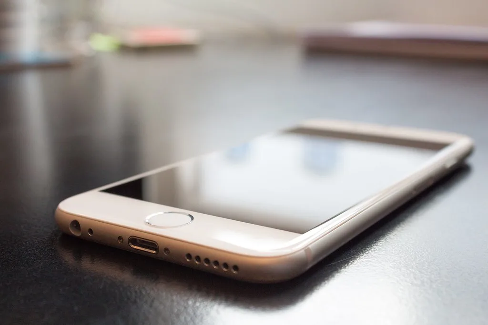

애플 첫 폴더블 '아이폰 듀오' 공개…갤럭시Z폴드8과 정면승부
애플이 현지시간 9일 미국 캘리포니아 애플파크에서 신제품 발표 행사를 열고 첫 폴더블 아이폰인 '아이폰 듀오'를 공개했다. 아이폰 출시 이후 처음 선보이는 폴더블 형태의 제품으로, 그동안 폴더블 시장을 주도해 온 삼성전자 갤럭시Z 시리즈와의 정면 승부가 예고되면서 국내외 소비자와 업계의 관심이 집중되고 있다. 그동안 폴더블폰 시장에 신중한 태도를 보여 온 애플이 마침내 참전을 선언하면서, 정체 국면에 접어들었던 프리미엄 스마트폰 시장에도 새로운 활력이 될 수 있다는 기대가 나온다.
아이폰 듀오는 펼쳤을 때 7.6인치, 접었을 때 바깥 화면 5.4인치 크기의 유기발광다이오드(OLED) 디스플레이 두 개를 탑재했다. 애플의 최신 칩셋인 'A20 프로'를 채택해 성능을 끌어올렸으며, 애플이 폴더블 제품에서도 태블릿에 준하는 생산성을 강조하고 나선 것으로 풀이된다.

기능 면에서는 USB-C 방식의 애플펜슬을 지원해 넓은 내부 화면을 활용한 필기와 그림 작업이 가능해졌고, 저장용량은 최대 2테라바이트(TB)까지 선택할 수 있다. 배터리 사용 시간은 내부 화면 기준 최대 31시간, 외부 화면 기준 최대 44시간의 동영상 재생이 가능하다고 애플은 설명했다. 애플펜슬 지원은 그동안 아이패드 프로 등 태블릿 제품군에 집중돼 있던 기능인 만큼, 이번 폴더블 아이폰을 통해 스마트폰과 태블릿의 경계를 더욱 좁히려는 시도로 해석된다.
한국은 아이폰 듀오의 1차 출시국에 포함됐다. 국내에서는 다음 달 16일 오후 9시부터 사전 주문을 받고, 23일 정식 출시될 예정이다. 국내 출고가는 256GB 모델이 329만원, 512GB 359만원, 1TB 419만원, 최상위 2TB 모델은 509만원으로 책정됐다.
비교 대상으로 꼽히는 삼성전자 갤럭시Z폴드8은 국내 출고가가 256GB 기준 227만8100원으로, 아이폰 듀오와는 100만원 안팎의 가격 차이가 난다. 두 제품의 내부 디스플레이 크기는 사실상 동일한 수준이지만, 갤럭시Z폴드8은 무게 201그램에 접힌 두께 9.7밀리미터로 상대적으로 가볍고 얇다는 점을 강점으로 내세우고 있다.
시장에서는 아이폰 듀오가 애플펜슬 지원과 iOS 생태계, 최대 2TB에 이르는 저장용량을 앞세운 반면, 가격과 완성도 측면에서는 갤럭시Z폴드8이 상대적으로 유리한 위치에 있다는 분석이 나온다. 애플의 폴더블 시장 진입 자체가 갤럭시Z폴드8에 대한 반사이익으로 이어질 수 있다는 전망도 함께 제기된다. 오랫동안 폴더블 스마트폰을 사실상 홀로 이끌어 온 삼성전자 입장에서는 애플의 참전이 위협이자 동시에 폴더블폰 자체에 대한 시장의 관심을 키우는 계기가 될 수 있다는 시각도 있다.
두 제품 모두 이달과 다음 달 사이 국내 시장에서 나란히 판매될 예정인 만큼, 소비자들의 실제 선택이 어느 쪽으로 쏠릴지는 출시 이후 판매량을 통해 가늠할 수 있을 것으로 보인다. 특히 두 제품 모두 300만원 안팎의 고가 프리미엄 라인에 속해 있어, 실사용자들의 반응과 초기 예약 판매 흐름이 향후 폴더블 시장의 무게중심을 가늠하는 지표가 될 전망이다. 애플의 폴더블 시장 진출이 국내 스마트폰 시장 경쟁 구도에 어떤 변화를 가져올지 주목된다.